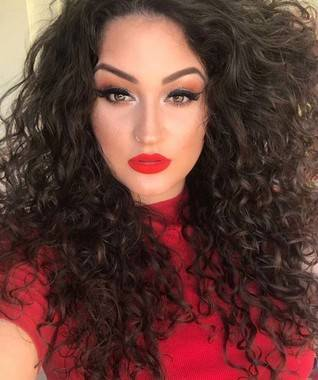

Cachos 3a - Cacheados
Cachos 3a - Os fios dos cachos tipos 3A tendem a ter cachos mais abertos. Cada cacho sendo A, B ou C vária bastante no modelo de sua curvatura, e o cachos do tipo 3a tende a ser diferente porque a sua formação ocorre de maneira mais irregular só pelo fato a raiz ser mais lisa ou ondulada na maioria das vezes, mas as pontas sempre tendem a ser mais cacheadas.
Uma das queixas de quem tem esse tipo de cabelo é justamente a sua irregularidade. Os cachos se formam bem em comprimentos longos, enquanto em cabelos curtos pode ser que a aparência seja mais lisa ou ondulada. No entanto, é possível fazer uso de alguns truques para lidar com essa característica.
Se o problema for a falta de volume e definição, é possível manter uma rotina de cuidados, bem como contar com a ajuda de produtos específicos para esse fio. Mas não se assuste, não é nada complicado. Entender o tipo do seu cabelo te ajuda a ter uma relação mais amigável com ele e obter um resultado arrasador!
Vamos te dar algumas dicas de como cuida dos Cachos 3a.
Atenção:Não se esqueça dos cuidados básicos: Nutrir, hidratar e finalizar com proteção. A forma ondulada dificulta a distribuição natural da oleosidade oferecida naturalmente pelo couro cabeludo. Por esse motivo a vulnerabilidade ao ressecamento se mantém. É preciso repor a umidade e a lubrificação de fora para dentro.